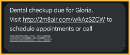
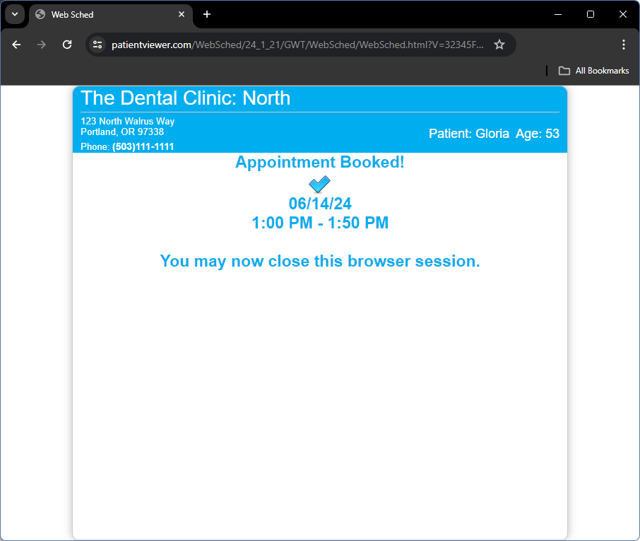

Web Sched Recall: What Patient Sees
See Web Sched Feature.
- The patient receives a notification to schedule their appointment with a clickable link that is patient-specific.

- When the link is clicked, Web Sched Recall opens in a browser.

- Patients can select a date and time from provider available times. The options shown to the patient can be controlled by the Web Sched Recall settings. You can also allow the patient to select a provider.
- The patient can also request to be notified if an earlier appointment time becomes available. This will add them to the ASAP List.
- Click Finalize Appt.
- A confirmation message shows for the patient to click Yes or No.

- If Yes, a confirmation of the now scheduled appointment shows.

- Close the browser to end the session.
In Open Dental
Scheduled appointments instantly show up in the Appointments Module.